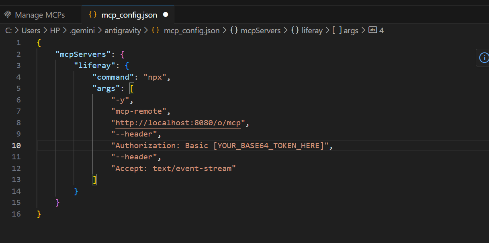
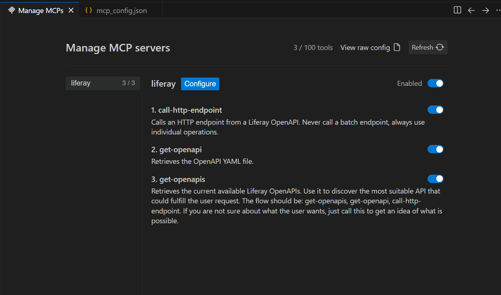
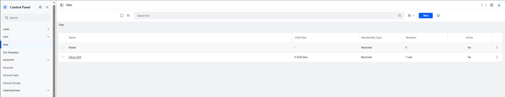
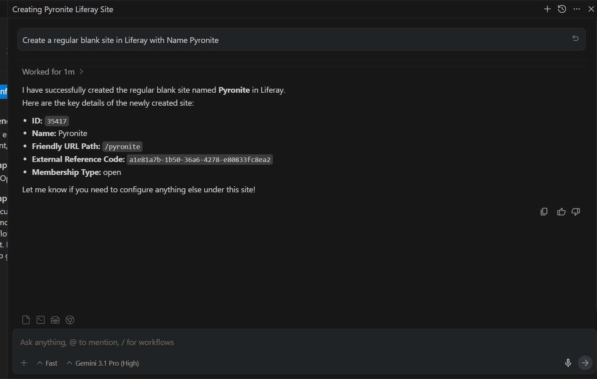
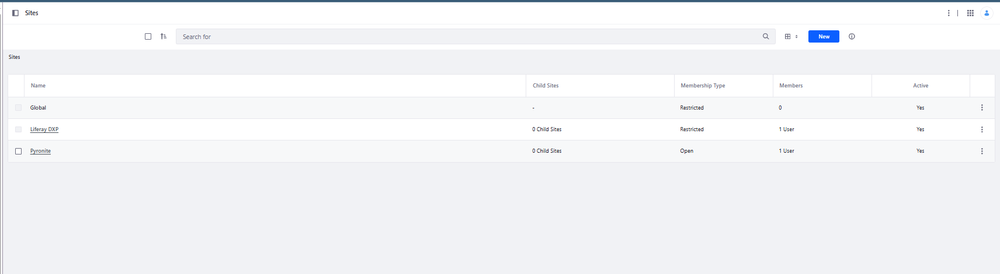

At Pyronite Tech, we are constantly exploring ways to elevate enterprise architecture. With the release of Liferay DXP Q1 2026, the platform has introduced a game-changing capability: native support for the Model Context Protocol (MCP). By connecting Liferay to an AI assistant like Antigravity via MCP, we can transition Liferay from a traditional portal into a dynamic, AI-driven platform.
This integration allows the AI to securely read your portal's context, fetch OpenAPIs, and execute headless operations directly from your prompt interface. However, because this feature is currently in beta, configuring it requires some precision.
Here is the definitive, step-by-step guide on how we successfully configured Antigravity with Liferay DXP Q1 2026.
Step 1: Enable the Beta Feature Flag in Liferay
Out of the box, the MCP endpoint in Liferay is hidden behind a feature flag. If you skip this step, the server simply will not respond to connection requests.
- Navigate to your Liferay DXP configuration environment or Control Panel.
- Locate the Feature Flags section.
- Explicitly enable
MCP Server (LPD-63311). - Restart your Liferay bundle to ensure the endpoint (
/o/mcp) is exposed.
Step 2: Create a Dedicated Service Account & Generate Credentials
Security is paramount when giving an AI agent access to your enterprise platform. You should never use a full Administrator account for this integration.
- Create the User: Set up a dedicated user (e.g.,
mcp-ai@pyronite.in) in Liferay. - Assign Granular Roles: Create a custom role that only has
VieworReadpermissions for the specific APIs (like Headless Delivery or User Management) the AI needs to interact with. - Generate the Basic Auth Token: Liferay requires Basic Authentication via a Base64 encoded string of your
username:password.
Quick generation via terminal:
echo -n "mcp-ai@pyronite.in:YourSecurePassword" | base64Step 3: Configure Antigravity to Communicate with Liferay
Antigravity requires a strictly formatted JSON configuration file to establish the Server-Sent Events (SSE) connection with Liferay.
Locate your Antigravity configuration directory:
- Windows:
%AppData%\Roaming\Antigravity\mcp.jsonor~/.antigravity/mcp_config.json - macOS/Linux:
~/.config/Antigravity/mcp.json
Add the following JSON block. We utilize the npx mcp-remote command to reliably handle the SSE connection bridge, which solves common IDE validation errors:
{
"mcpServers": {
"liferay": {
"command": "npx",
"args": [
"-y",
"mcp-remote",
"http://localhost:8080/o/mcp",
"--header",
"Authorization: Basic [YOUR_BASE64_TOKEN_HERE]",
"--header",
"Accept: text/event-stream"
]
}
}
}
Fig 1. MCP JSON Config in Antigravity
Crucial Configuration Notes:
- You must have Node.js installed on your machine for the
npxcommand to execute successfully. - The
--header "Accept: text/event-stream"argument is mandatory. Without it, Liferay will reject the connection with a 400 Bad Request and an "text/event-stream required" error, causing Antigravity to hang in an infinite loading loop.
Step 4: Verify and Start Using AI as a Platform
Once the JSON is saved, completely restart Antigravity (ensure you kill any lingering background node.exe processes via Task Manager to clear the cache).
When you reopen Antigravity, navigate to your MCP Servers panel. You should see liferay listed with 3/3 tools enabled. These built-in tools instantly empower your AI workflow:
get-openapis: The AI can now discover all available Liferay OpenAPIs dynamically.get-openapi: Fetches the specific YAML structure for a chosen API, allowing the AI to understand exactly what parameters are required.call-http-endpoint: The AI can execute actual read/write operations (based on the permissions of your service account) directly against your Liferay instance.

Fig 2. Completed MCP Liferay configuration in Antigravity
The Pyronite Workflow in Action
Before prompting the AI, here is our Liferay environment showing the current list of sites available:

Fig 3. List of sites in Liferay before any prompt
Instead of spending hours reading through API documentation or writing boilerplate REST calls, our developers can now simply open the Antigravity chat and ask:
"Create a new site in Liferay."

Fig 4. Prompting to create a site in Liferay
The AI automatically invokes get-openapis to find the correct endpoint, understands the schema via get-openapi, and executes the fetch using call-http-endpoint.

Fig 5. Site successfully created in Liferay
By integrating MCP with Liferay DXP, we are no longer just building portals; we are creating intelligent, self-documenting, and context-aware enterprise platforms.
Ready to elevate your digital platform?
If you are looking to integrate advanced AI capabilities into your Liferay ecosystem or need expert enterprise architecture consulting, the Pyronite Tech team is here to help.
Drop us a msg at business@pyronite.in to start the conversation.